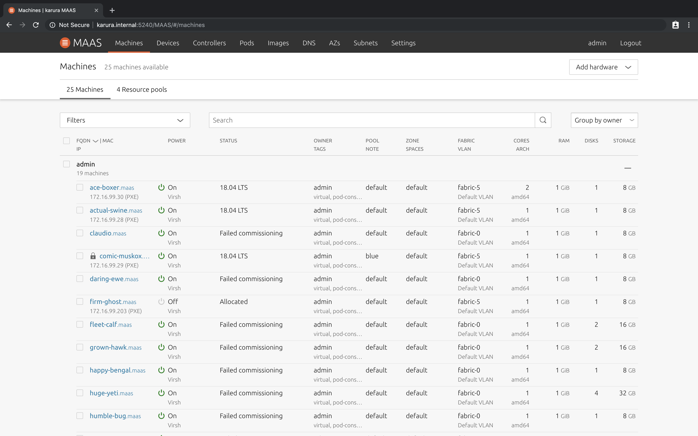

This page contains detailed information on how to become a successful MAAS documentation writer. Welcome to the club.
Once you have permission to edit the doc, you can modify any article by choosing the link at the bottom, entitled, “Help improve this document in the forum.” Recognize that what you change will be posted instantly. Check your work carefully before saving your edits!
Some questions to ask yourself as you are contributing:
Does your reply improve the conversation in some way?
Is your contribution kind to fellow community members?
Is your constructive criticism focused on ideas, and not people?
Are you certain of the technical accuracy of your contribution?
If you can answer these questions in the affirmative, your edits should be welcome.
Please follow these guidelines for style and language:
Note that the document markup is not particularly complicated. For the most part, if you rely on the formatting bar just above the editor window – or use standard HTML – you shouldn’t have much difficulty.
Headers are simple to create, using standard HTML:
<h2 id="optional-unique-id">Heading Level 2</h2>
<h3 id="optional-unique-id">Heading Level 3</h3>
... and so on...
Bold and italic text can be indicated in two different ways. You can use standard HTML markup:
<strong>Bold Text</strong>
<em>Italic Text</em>
You can also use the local editor markup:
**strong**
_italic_ (note that's just a single underbar)
A code block (or pre-formatted text) is inserted by indenting four spaces:
maas command do something
maas command do something else
```
You can use this style anytime you want to present:
Use a <code> tag to mark inline filenames and other literals as code examples. Alternatively, you can also use the backtick, like this:
...can also use the `backtick`, like this...
An admonishment distinguishes information from the rest of the text. The syntax begins with the markup tag [note] and ends with the corresponding closure [/note]:
[note type="admonishment-type" status="Admonishment title"]
Admonishment text.
[/note]
Where:
admonishment-type can be ‘Note’, ‘Warning’, ‘Positive’, or ‘Negative’.Admonishment title is an optional title, formatted with whatever markups you desire.Admonishment text is the text you wish to convey.Note Admonishment
A ‘Note’ type admonishment is marked up like this:
[note status="Note"]
If KVM-backed nodes are used, ensure that the 'maas' user on the rack
controller can connect to the KVM host using a passphraseless private SSH
key.
[/note]
And it will appear as: [note status=”Note”] If KVM-backed nodes are used, ensure that the ‘maas’ user on the rack controller can connect to the KVM host using a passphraseless private SSH key. [/note]
Warning Admonishment
Mark up a standard ‘Warning’ type admonishment this way:
[note type="caution" status="Warning"]
Data will be lost unless you do the right thing.
[/note]
And it will appear like this:
[note type=”caution” status=”Warning”] Data will be lost unless you do the right thing. [/note]
Positive Admonishment
A ‘Positive’ type admonishment should be entered as follows:
[note type="positive" status="High score"]
A positive note that should include a title.
[/note]
It will show up in the document like this:
[note type=”positive” status=”High score”] A positive note that should include a title. [/note]
Negative Admonishment
Finally, a ‘Negative’ type admonishment, with its title, could be marked up like this:
[note type="negative" status="Game over"]
A negative note that should include a title.
[/note]
And will look this way to the reader:
[note type=”negative” status=”Game over”] A negative note that should include a title. [/note]
Occasionally it may be appropriate to include a comment to explain or organize some text. This ends up as an HTML comment – which can be read online, even if only in the browser inspection window – so take it seriously:
<!--
The below text may be removed soon.
-->
Links to internal files or external URLs use the following format:
[visible text](URL)
The visible text is what will appear on the web page. The URL is used to refer to the destination, which is a fully-qualified URL. For example:
Refer to [Google](https://www.google.com).
which would show up as “Refer to Google.”
An image should not be overly cropped - allow for context. When ready, place the image file in the uploads directory.
In terms of linking, they are managed very similarly to hyperlinks. However, they are placed on their own line; are preceded by an exclamation point; and both the label and destination have a specific naming convention:
<a href="images/1f2e6cf2879e391e7ae1ad537cc9ce1baa119f86.png" target = "_blank"><img src="images/1f2e6cf2879e391e7ae1ad537cc9ce1baa119f86.png"></a>></a>
This image would appear in this way:
>
You can create optional detail sections (something like and “in-line sidebar”) by using these constructions:
this summary appears with an arrow next to it
this text toggles when you click on the arrow
You can do multiple levels of this.
this is yet another hidden level
This sequence would present like this in the finished document:
this summary appears with an arrow next to it
this text toggles when you click on the arrow
You can do multiple levels of this.
this is yet another hidden level
Do not use a “Caps Everywhere” style. It is only used in level one headers and the title metadata. References (visible text) to these page titles (including the navigation) should just capitalize the first letter. Obviously, this does not pertain to words that should always be capitalized according to basic grammar rules (e.g. acronyms, proper nouns).